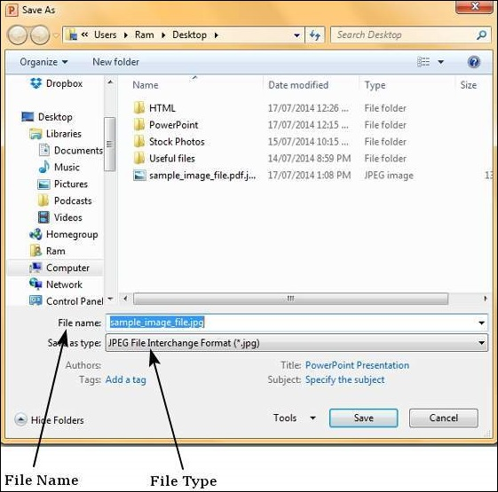

Among the many file types that PowerPoint supports are a set of extensions for image files. The image file extensions supported by PowerPoint include JPEG (.jpg), GIF (.gif), TIFF (.tiff) and Bitmap (.bmp).
Given below are the steps to save a presentation as an image file.
Step 1 − Go to the Backstage view under the File tab.
Step 2 − Click on Save As to open the Save As dialog.
Step 3 − Select one of the image file types from the list of supported file types.
Step 4 − Add a proper name to the file and click Save.

Step 5 − Microsoft PowerPoint dialog will pop up asking if you need just the selected slide or the entire presentation, make your selection.
The respective image file is created in the specified location.
If you selected a single image, the image file is created at the specified location. If you selected entire presentation, then PowerPoint will create a folder with same name as the presentation file at the specified location. Every slide in the presentation will be converted into individual image files and stored under this folder.